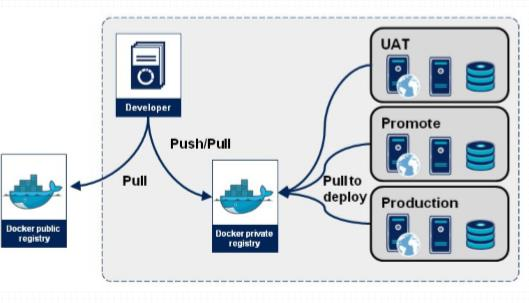
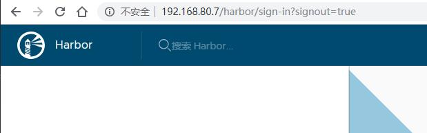

Docker Registry
Registry用于保存docker镜像，包括镜像的层次结构和元数据
用户可自建Registry，也可使用官方的Docker Hub

分类
Sponsor Registry：第三方的registry，供客户和Docker社区使用
Mirror Registry：第三方的registry，只让客户使用
Vendor Registry：由发布Docker镜像的供应商提供的registry
Private Registry：通过设有防火墙和额外的安全层的私有实体提供的registry
Registry(repository and index)
Repository
由某特定的docker镜像的所有迭代版本组成的镜像仓库
一个 Registry中可以存在多个Repository
Repository可分为“顶层仓库”和“用户仓库”
用户仓库名称格式为“用户名/仓库名”
每个仓库可以包含多个Tag(标签) ，每个标签对应一个镜像
Index
维护用户帐户、镜像的校验以及公共命名空间的信息
相当于为Registry提供了一个完成用户认证等功能的检索接口
从Docker hub获取，站点：https://hub.docker.com/
Docker Registries有两重功能
1、提供镜像存储的仓库
2、用户来获取镜像的认证，当前服务器上所有可用镜像的搜索功能等
repository ---> repo 一个仓库只放一个应用程序镜像；可以放同一程序的不同版本，仓库名+标签来唯一标识一个镜像；一个镜像可有多个标签(tag)，不给标签名默认使用latest最新
公共仓库Registry
用户可以将自己的镜像保存到免费的 repository 中
在Dokcer host上验证登录
docker login
推送到你注册的用户名下
docker pull [username]/xxx:tag
在Docker上搭建本地的 Registry
Docker Hub 虽然非常方便，但还是有些限制，比如：
需要 internet 连接，而且下载和上传速度慢。
上传到 Docker Hub 的镜像任何人都能够访问，虽然可以用私有 repository，但不是免费的。
安全原因很多组织不允许将镜像放到外网。
搭建本地的 Registry是解决以上问题的一种选择
基于docker-distribution 的搭建
安装docker-distribution包，在extras仓库里
yum -y install docker-distribution
查看/etc/docker-distribution/registry/config.yml文件

默认不做修改，启动服务
systemctl start docker-distribution.service
启动成功后，服务监听在5000端口
默认docker不支持不安全的http协议，需要在docker的json配置文件写入"insecure-registries":[]这个配置项。如果能够解析主机名，也可以写 主机名:5000,如下

重启docker服务,会使用http协议连接仓库
systemctl restart docker.service
推送到仓库的镜像打标签
docker tag nginx:v1 192.168.80.7:5000/testdis_nginx:v1
docker push 192.168.80.7:5000/testdis_nginx:v1
报错
出现如下的报错，registry有两个版本的接口，v1和v2,可能是docker-ce推送时调用的是v2版本接口，但是docker-distribution不支持版本v2,只支持v1，这里默认找v2版本。导致出现如下的报错
Get https://192.168.80.7:5000/v2/: http: server gave HTTP response to HTTPS client
可以借助nginx来实现安全认证
Docker private Registry的Nginx反代配置方式：
client_max_body_size 0;
location / {
proxy_pass http://registrysrvs;
proxy_next_upstream error timeout invalid_header http_500 http_502 http_503 http_504;
proxy_redirect off;
proxy_buffering off;
proxy_set_header Host $host;
proxy_set_header X-Real-IP $remote_addr;
proxy_set_header X-Forwarded-For $proxy_add_x_forwarded_for;
auth_basic "Docker Registry Service";
auth_basic_user_file "/etc/nginx/.ngxpasswd";
}
基于harbor 仓库搭建
Harbor是一个用于存储和分发Docker镜像的企业级Registry服务器，通过添加一些企业必需的功能特性
基于角色的访问控制
镜像复制
图形化用户界面
AD/LDAP 支持
审计管理
部署简单 - 提供在线和离线两种安装工具
vmware harbor得借助于docker的单机编排工具：docker-compose
Harbor安装部署
tar xf harbor-offline-installer-v1.4.0.tgz -C /usr/local/
cd /usr/local/harbor/
vim harbor.cfg
#注意，这个配置文件，如果不更改，里面的选项都是会自动创建，所以要看清楚，包括路径是否和本地其他文件有冲突
#主要修改以下三个配置，其他配置可使用默认
hostname= IP/hostname
db_password=root123
#管理登录密码
harbor_admin_password = Harbor12345
./install.sh
成功标志
? ----Harbor has been installed and started successfully.----
docker没有实现安全访问，因此需要把harbor的主机写入insecure-registries配置段

连接， 域名解析时需要添加主机名解析

推送镜像前要进行登录验证
docker login harbor.server.com
推送到仓库的镜像打标签
docker tag php harbor.server.com/test/php:v1 #test为创建的仓库项目名
docker push harbor.server.com/test/php:v1
停止harbor服务，通过docker-compose来实现，所有harbor服务会被停止
注意，命令必须在/usr/local/harbor/路径下执行
docker-compose stop
启动服务
docker-compose start